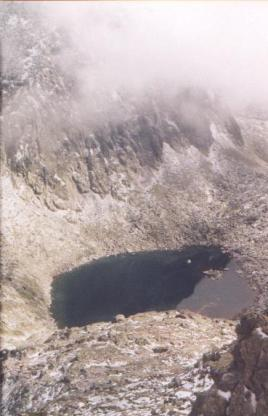

| Tadeusz Bocheński (1895-1962)
Siodło
Zimną pustką, kamieniem
wywspinać się na siodło
i nie zastać przestrzeni,
ale mgłę -
wybornie bywa: podmą
po cichu rozczesana,
mgła pierzcha, traci się,
a granatowoburym
okiem wyziera w górę
staw.
Ciepłą pustką, blaskami,
kwiatami, wonią traw
zstępować, gdy w otchłani
nie staw już, ale paw
cudacko jest i tęskno,
że oto byś po męsku
te skały w uścisk garnął,
kosówkę przyległ czarną
lub się w niebiosa wśpiewał,
jak piorun i jak drzewa,
co z burzą jedno są,
miotają się i wrą. |

"granatowoburym okiem wyziera..."
Capi Staw w Dolinie Młynicy
fot. Pacyfka |